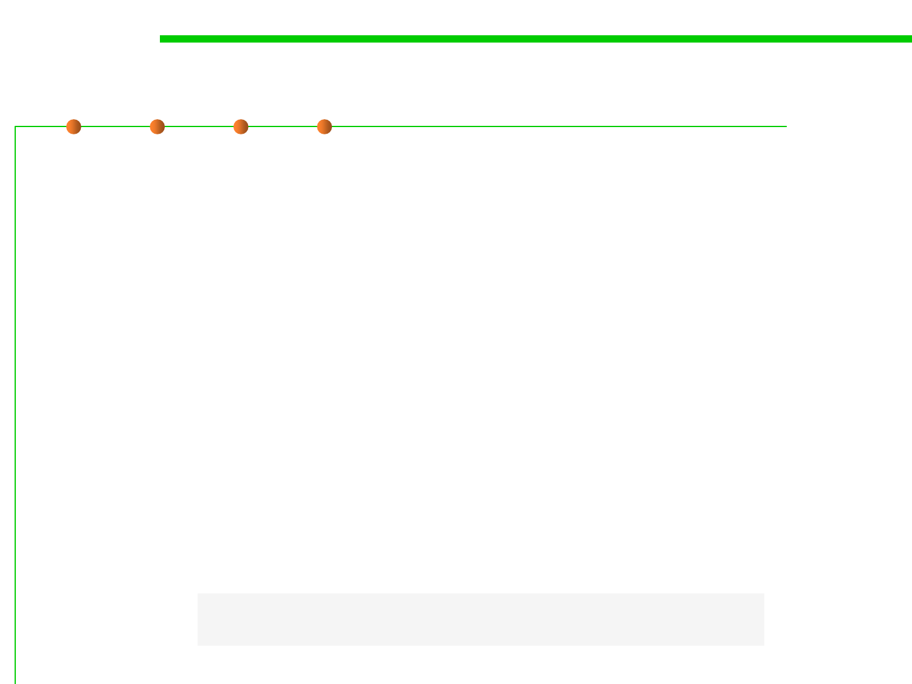

6.3 Maintainability-Oriented Construction Techniques
Nonterminals and Productions in a Grammer
▪ A grammar is described by a set of productions(产生式), where
each production defines a nonterminal(非终结符).
– A nonterminal is like a variable that stands for a set of strings, and the
production as the definition of that variable in terms of other variables
(nonterminals), operators, and constants (terminals).
– Nonterminals are internal nodes of the tree representing a string.
▪ A production in a grammar has the form
– nonterminal ::= expression of terminals, nonterminals, and operators
▪ One of the nonterminals of the grammar is designated as the root.
– The set of strings that the grammar recognizes are the ones that match the
root nonterminal.
– This nonterminal is often called root or start.
url ::= 'http://' hostname '/'
hostname ::= 'mit.edu' | 'stanford.edu' | 'google.com'